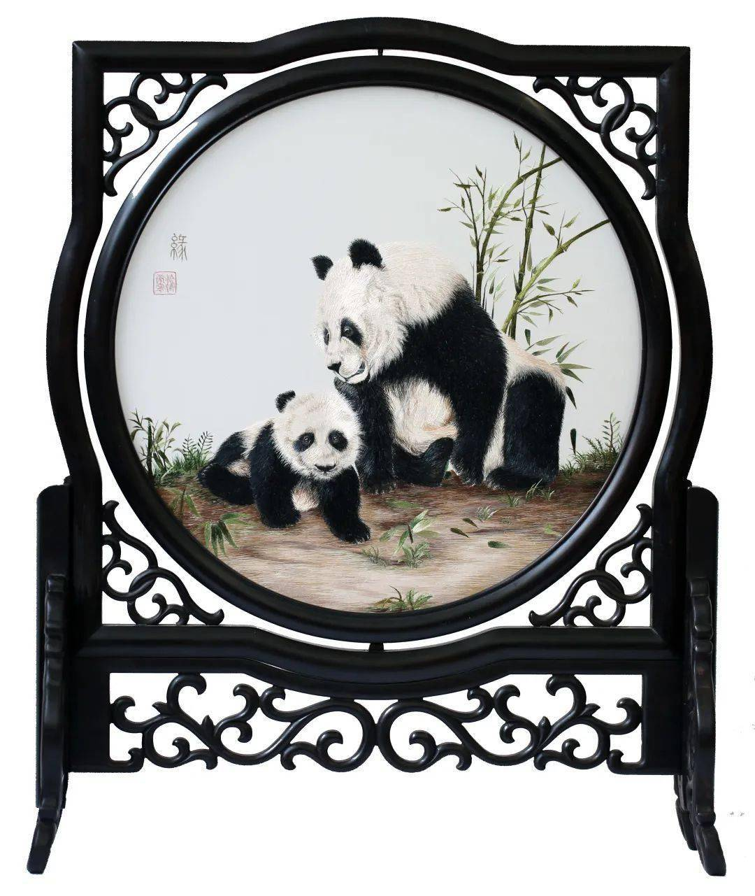
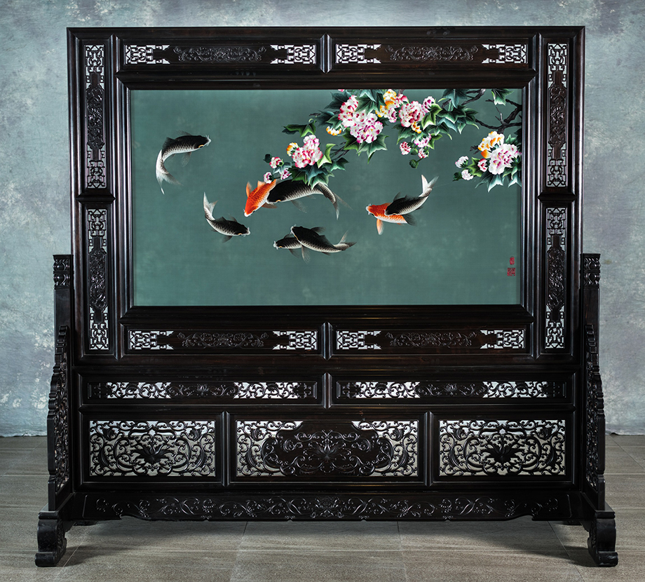
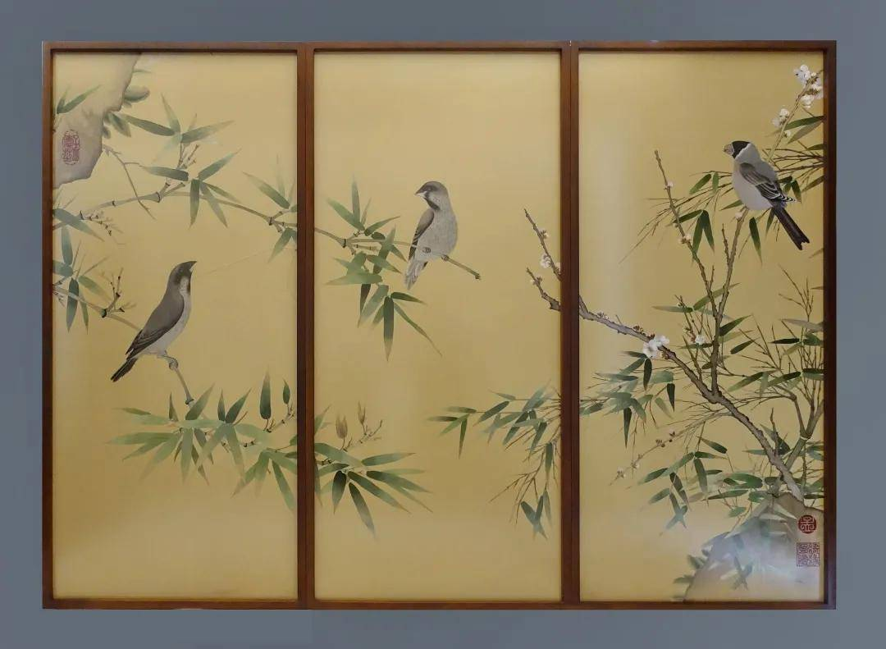
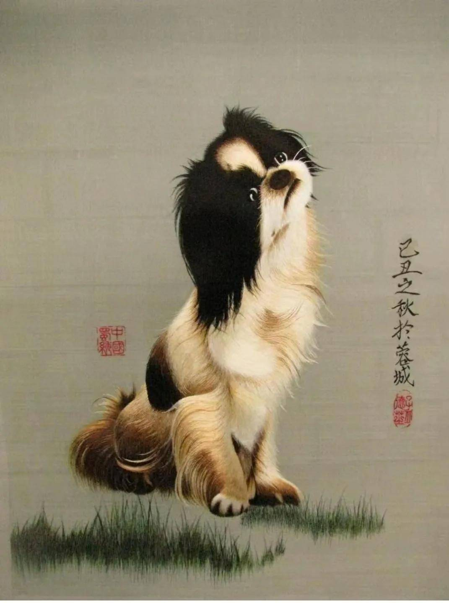

作品欣赏
蜀绣


《芙蓉鲤鱼》
作品为双面绣，通过柔韧有弹性的丝线描绘了一幅芙蓉盛开，鲤鱼嬉戏，充满情趣的画面。游动的鲤鱼双眼大睁、嘴微张，体形侧扁， 背部较普通鲤鱼高且厚，全身鳞片紧密，配合内收的腹部肌肉，给人们带来一种跃跃欲出的活力。绣面上芙蓉交错点缀， 清新自然的风格令人如置身荷塘月色中。作品色调处理柔和，针脚密匀，质感强烈。以逼真精妙的外在形象直探生命的本质意义， 与自然事物对话，达到物我同一的境界。
《荷花猫鱼》
此幅作品的背景为一片碧绿的荷叶和点缀其间涨数组娇艳的荷花。池中假山上，一黄一黑两只小猫正凝目注视着水中九条黑红鲤鱼。 画面图形、色彩、针法技艺两面一样，同时完成。主要针法有运针、切针、沙针、滚针、丝毛针等，其中鲤鱼是蜀绣代表作， 鱼鳞的刺绣针法技艺精湛，刺绣小猫时采用的丝毛针是蜀绣的高难针法。绣品中，荷花荷叶交相辉映，小猫生动可爱，鲤鱼栩栩如生， 组成了一幅和谐有趣的画面。绣品色彩夺目，过渡自然，针路严谨、针法细腻，配装再黑檀木雕刻的木框内，高雅、珍贵， 具有蜀绣浓郁的地方特色。
《熊猫与藏獒》
此幅作品采用蜀绣施毛针、运针、覆盖针、沙针、滚针、截针、点子针、齐针等针法绣制，把国宝熊猫的憨态可掬、藏獒的聪明表现得淋漓尽致。
《熊猫与藏獒》
此幅作品采用蜀绣施毛针、运针、覆盖针、沙针、滚针、截针、点子针、齐针等针法绣制，把国宝熊猫的憨态可掬、藏獒的聪明表现得淋漓尽致。

《荷花鲤鱼》

《竹鸟》
陈列在天府机场国际要客厅的孟德芝新作

《秋色高原》
绣品远景为蓝天下的高山雪景，蔚蓝的天空下，起伏的高山覆盖着皑皑白雪，气势恢宏；近景为一望无际的秋日草原， 金灿灿的花草和苍黄的树木斑斓绚丽。浑然一体，层林尽染的画面呈现出祖国西南高原秋色的壮美，意境深远。 该绣品是对蜀绣技艺的一大创新。蜀绣作品过去以工笔国画为主，色彩淡雅。而该幅绣稿具有油画的效果，色彩斑谰， 与蜀绣传统技法不同。孟德芝及团队用时3个多月，采用1000多种颜色的丝线，上乘的贡缎作底料，运用用乱针技艺刺绣花草树木， 以运针、铺针、盖针、切针、纱针刺绣高山、云彩和积雪。长7.5米、高3.4米的巨幅蜀绣《秋色高原》陈列于北京人民大会堂， 被装饰在全国人大常委会会议厅东西过厅中。

《寿桃》

《九子·熊猫》

《九子·熊猫》
《蜀宫乐伎》
该绣品的画面为二十二位蜀国乐伎各执中国古代古琴、笙、拍板、吹叶、羯鼓、铜钹、月琴、横笛、和鼓、琵琶、排箫、 箎等乐器进行演奏的情景。该绣品采用了蜀绣的运针、铺针、切针、沙针、锦纹针等十余种针法，人物形象生动，衣饰华丽， 栩栩如生地表现了五代十国时期蜀国歌伎表演的盛况。该作品获2011年“四川省民间工艺品百家精品十佳作品”称号，系蜀绣单面绣中的精品。

《长毛垂耳狗》

七夕logo

竹林鸡马图
作品选用产于四川的国家一级保护珍禽——马鸡为题材，以蜀绣的传统针法绣制而成。绣制技艺严谨细致，平、齐、光、亮，色调淡雅清新。 马鸡雌雄交叉，上下呼应，形象生动，造型静中有动，体态自如；背景竹林，突破常规，以洁白竹干，衬托马鸡，主次分明，聚散适宜， 是蜀绣中的精品。